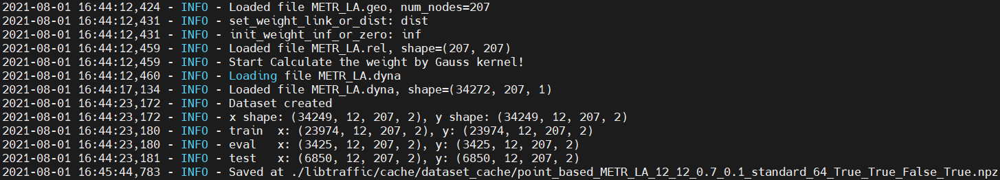
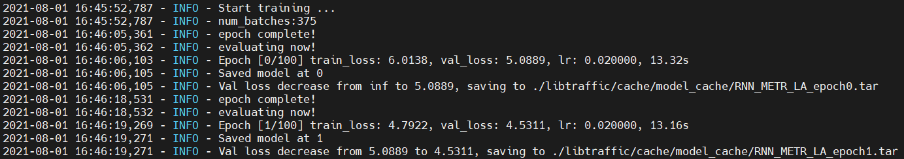

运行LibCity中已复现的模型¶
这里，我们将展示如何运行LibCity中一个已复现的模型。
下载数据集¶
LibCity提供了29个交通数据集，并在网站和文档上展示了其基本信息。为了格式化各种交通数据，我们设计并实现了6种原子文件格式，它们可以描述不同交通预测任务大部分的输入数据。更多细节可见文档的相关内容。
我们已经将处理好的数据集的原子文件上传至百度网盘（提取码：1231）和Google Drive，用户可以直接进行下载。
以METR_LA数据集为例，下载成功后，我们会得到一个名为METR_LA的文件夹。
如果您还没有安装
LibCity，您可以在这里找到安装教程。
如果LibCity安装成功后，我们会得到一个名为Bigscity-LibCity的文件夹。我们需要在项目根目录下创建一个名为raw_data的文件夹，用来存放处理好的数据集原子文件。然后，我们需要将之前下载好的METR_LA文件夹移动到raw_data文件夹下。此时raw_data文件夹下有一个METR_LA文件夹，而在METR_LA文件夹下有4个原子文件。
设置参数¶
LibCity运行时的参数由三部分决定：命令行参数、用户自定义的参数配置文件、LibCity默认参数配置文件。其中，LibCity默认的参数配置文件包括数据模块、执行模块、评测模型、模型模块的参数配置文件。
参数优先级¶
命令行参数 > 用户自定义的参数 > 模型模块的默认参数 > 数据模块、执行模块、测评模块的默认参数
LibCity默认参数配置文件¶
LibCity对于数据模块、执行模块、测评模块、模型模块的默认参数文件分别位于以下四个目录中：
libcity/config/datalibcity/config/executorlibcity/config/evaluatorlibcity/config/model
我们以GRU模型为例，来看看其在LibCity中的默认参数配置。首先打开libcity/config/task_config.json，该文件记录了不同的任务支持的模型和数据集，以及各个模型在LibCity中使用的数据集类、执行器、评测器。
{
"traffic_state_pred": {
"allowed_model": [
..., "GRU", ...
],
"allowed_dataset": [
"METR_LA", ...
],
...
"GRU": {
"dataset_class": "TrafficStatePointDataset",
"executor": "TrafficStateExecutor",
"evaluator": "TrafficStateEvaluator"
},
...
}
}
我们可以看到GRU采用的数据集类是TrafficStatePointDataset、执行器是DCRNNExecutor、评测器是TrafficStateEvaluator。
因此，我们可以在libcity/config/data/TrafficStatePointDataset.json中看到数据模块的默认参数。
{
"batch_size": 64,
"cache_dataset": true,
"num_workers": 0,
"pad_with_last_sample": true,
"train_rate": 0.7,
"eval_rate": 0.1,
"scaler": "none",
"load_external": false,
"normal_external": false,
"ext_scaler": "none",
"input_window": 12,
"output_window": 12,
"add_time_in_day": false,
"add_day_in_week": false
}
执行模块的默认参数位于libcity/config/executor/TrafficStateExecutor.json。
{
"gpu": true,
"gpu_id": 0,
"max_epoch": 100,
"train_loss": "none",
"epoch": 0,
"learner": "adam",
"learning_rate": 0.01,
"weight_decay": 0,
"lr_epsilon": 1e-8,
...
}
也可以在libcity/config/evaluator/TrafficStateEvaluator.json中看到评测模块的默认参数。
{
"metrics": ["MAE", "MAPE", "MSE", "RMSE", "masked_MAE", "masked_MAPE", "masked_MSE", "masked_RMSE", "R2", "EVAR"],
"mode": "single"
}
而模型模块的默认参数则位于libcity/config/model/traffic_state_pred/RNN.json中，它的优先级要高于其他三个模块的默认参数。以scalar参数为例，它在模型模块默认参数配置文件中的值是standard，在数据模块默认参数配置文件中的值是none，则scalar参数在LibCity中最终的默认值是standard。
{
"hidden_size": 64,
"num_layers": 1,
"dropout": 0,
"bidirectional": false,
"teacher_forcing_ratio": 0,
"scaler": "standard",
"load_external": true,
"normal_external": false,
"ext_scaler": "none",
"add_time_in_day": true,
"add_day_in_week": false,
...
}
用户自定义的参数配置文件¶
LibCity允许用户使用自定义的参数配置文件，且其优先级高于默认参数配置文件，方便用户进行模型调试。用户自定义的参数配置文件需要满足以下要求：
用户自定义的参数配置文件必须是一个JSON文件；
JSON文件应该存储一个字典，它的key应该是参数名，value是要设定的参数值；
文件应该放在项目的根目录下，并在用命令行执行时以
--config_file参数的形式传递进去。
例如，我们可以在根目录下创建一个GRU_METR_LA.json文件，内容如下：
{
"learner": "sgd"
}
命令行参数¶
项目根目录中的run_model.py是LibCity提供给用户进行模型训练和测评的脚本，它也支持以命令行参数的形式供用户来调整运行时的参数。
当我们运行run_model.py时，必须要声明三个参数是task、dataset和model，分别表示要执行的任务、使用的数据集和使用的模型。例如，如果我们想要在METR_LA数据集上用DCRNN模型执行交通状态预测任务，就应该执行如下的命令：
python run_model.py --task traffic_state_pred --dataset METR_LA --model GRU
用户也可以使用-h获取帮助信息：
运行模型¶
如果您已经下载并放置好了数据集，那么只需要一行指令，这个模型就可以运行起来了。
python run_model.py --task traffic_state_pred --dataset METR_LA --model GRU
如果您想通过命令行和自定义参数配置文件传递参数，您可以运行如下指令：
python run_model.py --task traffic_state_pred --dataset METR_LA --model GRU --learning_rate 0.02 --config_file GRU_METR_LA
在运行的过程中，记录模块会输出运行信息。
首先，记录模块提示模型运行的记录会保存在libcity/log文件夹下的相应文件中，并开始模型训练的流水线。

然后，执行模块会加载原子文件，创建数据集，划分训练集、验证集、测试集，并将划分好的数据集保存在libcity/cache/dataset_cache下。下次在相同参数的数据集上运行模型时，不需要重新进行数据预处理操作。

记录模块还会输出模型的结构和参数量、优化器和学习率调整机制。我们可以发现，优化器已经变成了我们在自定义配置文件GRU_METR_LA.json中设置的sgd。

接下来，执行模块就开始训练模型了。结束一个epoch的训练，记录模块会输出模型在训练集和验证集上的误差、学习率、训练时间。我们可以发现，学习率已经变成了我们通过命令行传递进去的0.02。

最终，模型训练结束后，执行模块会在测试集上评测模型的性能，并将训练好的模型和评测结果分别保存在libcity/cache/model_cache/和libcity/cache/evaluate_cache/下。